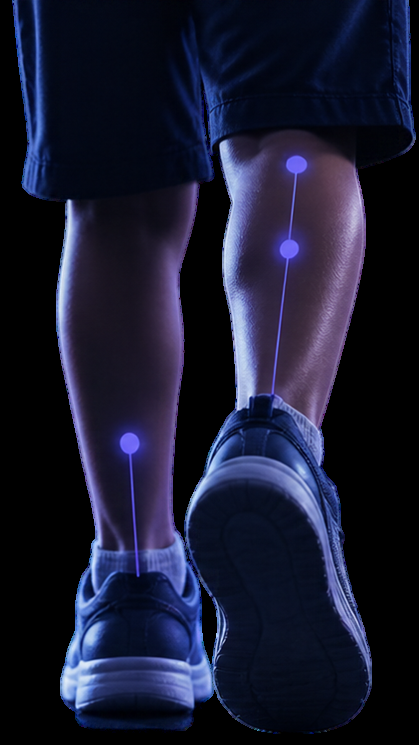
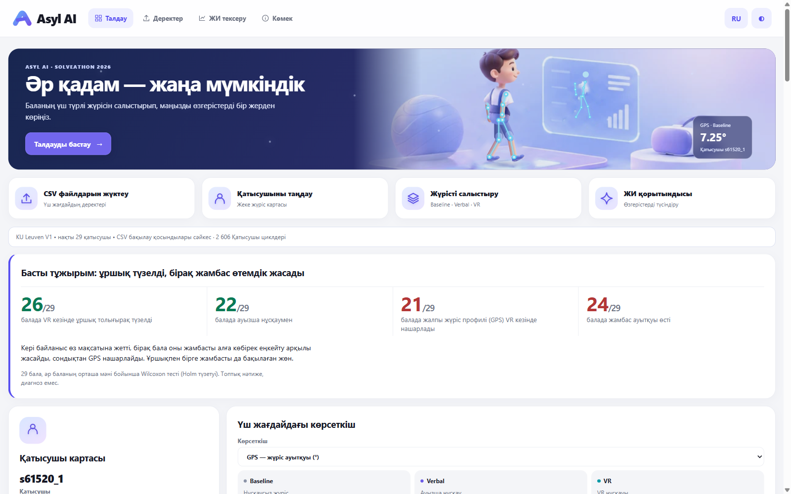
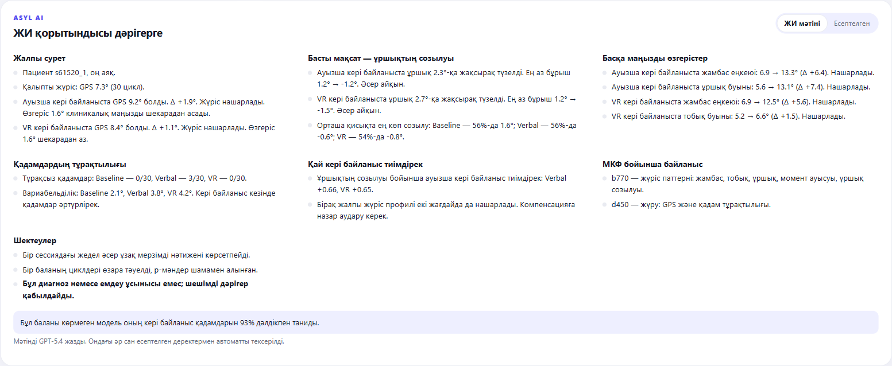
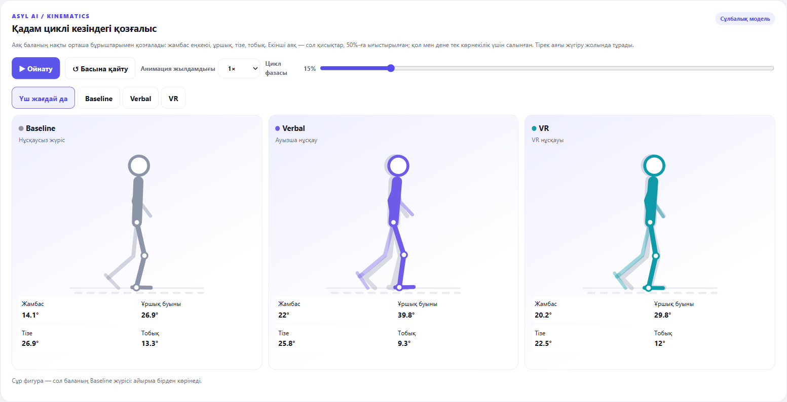
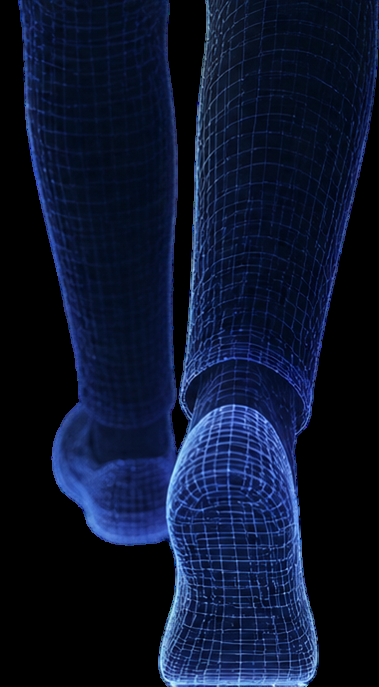

ДЦП бар балалардың жүрісін талдайтын дәрігер көмекшісі

Дәрігердің сұрағы қарапайым: кері байланыс балаға көмектесті ме?
Нақты деректер осылай көрінеді: үтірмен жазылған сандар, бос мәндер, бір файлда жүздеген баған.
Қолмен салыстыру сағаттар алады.
Көрсеткіш көп, маңыздысы көрінбей қалады.
Бір буын жақсарса, басқасы нашарлауы мүмкін.
Бала тренажерде кәдімгідей жүреді, ешқандай нұсқау жоқ.
Маман «аяғыңды артқа толық түзе» деп ауызша айтып тұрады.
Бала экраннан өз аватарын көріп, ұршығын түзетеді.
KU Leuven, 2024 · ашық және иесіздендірілген деректер · CC-BY-NC-SA-4.0 · doi.org/10.48804/JUNNWW
Браузерде ашылатын платформа: орнату қажет емес

Кері байланыс өз мақсатына жетеді, бірақ бала оны жамбасты алға көбірек еңкейту арқылы жасайды. Сондықтан ұршықпен бірге жамбасты да бақылау керек.
Әр баланың орташа мәні бойынша Wilcoxon тесті, Holm түзетуі. Топтық нәтиже, диагноз емес.

Дәрігер баланы таңдайды, платформа бәрін бір бетте көрсетеді.
Әр көрсеткіш бойынша статистикалық тест және әсер өлшемі. Ең маңыздысы бірінші шығады. GPS үшін 1,6° клиникалық шекара ескеріледі.
Баланың өз «типтік» қадамынан қатты ерекшеленетін циклдер табылады: робаст z-score және IsolationForest. Барлығы 139 цикл белгіленді.
Модель жеке қадамға қарап жағдайды анықтайды. Бала оқытуға қатыспай, бөлек тексеріледі.
Есептелген сандардан қазақша және орысша қорытынды құралады. GPT-5.4 оны түсінікті етіп қайта жазады, ал мәтіндегі әр сан автоматты тексеріледі: деректерде жоқ сан болса, мәтін қабылданбайды.
Платформа ем тағайындамайды, тек дәрігерге анықтама береді. Әр бетте осы ескерту тұр.
Модель бір баланың қадамдарын оқытуда да, тексеруде де қолданбайды. Бұл кодта тексеріледі, 42 автоматты тест бар.
CSV браузерде өңделеді. ЖИ кілті сайтта жоқ: мәтіндер алдын ала, тек есептелген сандардан жасалған.
Шектеулер. Бұл бір сессиядағы жедел әсер, ұзақ мерзімді нәтиже емес. 29 бала — шағын іріктеме. Жүріс фигурасы — орташа бұрыштардан құрылған схема, 3D қалпына келтіру емес.
Зерттеу деректері бір батырмамен ашылады немесе үш CSV файлы жүктеледі.
Көрсеткіштер, қисықтар, жүріс анимациясы және ЖИ қорытындысы.
ЖИ модельдің адал метрикалары және басып шығаруға дайын есеп.

Asyl AI жүріс деректерін бірнеше минутта түсінікті қорытындыға айналдырады.
Басты нәтиже: ұршық түзелді, бірақ бала мұны жамбасты еңкейту арқылы жасады.
Медициналық диагноз қоймайды, ем тағайындамайды.
